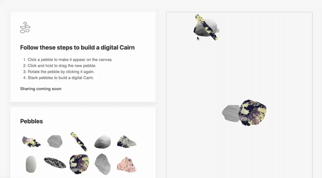

Brandon Herford
Brandon Herford is a Front-end Developer based in New England, USA with over 5 years of experience in the software engineering field.
In 2023 Brandon enrolled in Launch School, a "mastery based learning" software engineering program, with the goal of moving from Front-End to Full Stack software development.
Work
Suffolk
Keller - Mobile Data Monitoring
Keller - Data Dashboard
Blue365Deals.com
Brown University Real Estate
- myfund.org (2017) Jekyll, Static Site Generator, CSS
- ColdEeze.com (2015) Visual Design, wireframes
LAB

Haybale (2019)
HayBale is a web application that takes text input and generates hashtags in real-time.
Scanner study (2019)
-
Cairnternet (2018)
Imagine you are hiking in the mountains and the trail is old and hard to follow. You see a stack of blocks, stones, and pebbles marking the way.

Outdoors & Vintage
During the Global Coronavirus Pandemic, Brandon began a clothing resale business. Focusing on vintage hiking and outdoors clothing, Brandon made over $1000.00 is his first few months operating.

Scanner study (2019)
-
Web & Social
Writing
Brandon writes about his design and development work and ideas on his Medium blog.
Pushing code
While working through the online engineering program "Launch School", Brandon also maintains personal projects on GitHub.
Design & Illustration
Brandon has a Bachelors of Fine Art, and maintains a sketch book and Dribbble account with work and ideas.